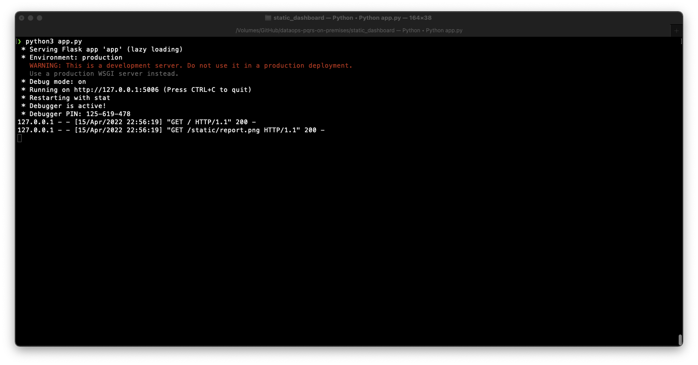
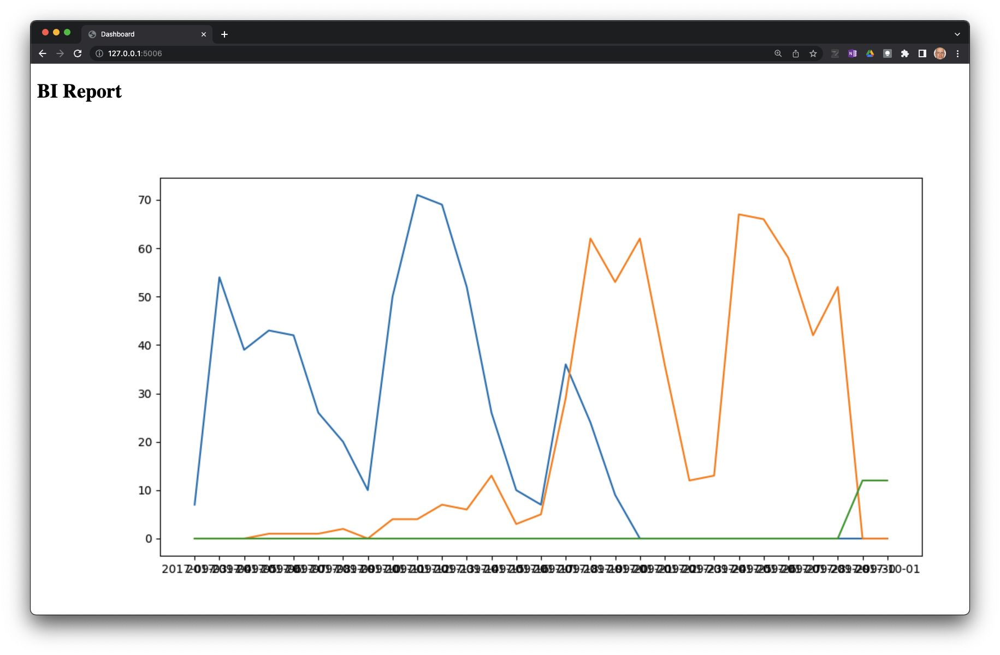

Etapa 5 — Desarrollo de una app de inteligencia de negocios para usar en la intranet
Ultima modificación: Mayo 14, 2022 | YouTube
Definición de la situación actual

El reporte de inteligencia de negocios ha sido exitoso y debe hacerse disponible a otros equipos de la organización para consulta por demanda.
Se ha decidido automatizar el reporte y Claudia desarrolla un primer prototipo muy simple usando Flask, con la intención de ejecutar la versión final en el servidor de productivo.
La ventaja está en que se puede automatizar la automatización de los gráficos con la última información disponible cuando el usuario final entra a la página.
Esta solución liberá a Clauida de responsabilidades:
No debe estar pendiente de preparar el informe y enviarlo los lunes a primera hora.
Este tiempo se libera para otras actividades.
Problemas
Claudia lleva el aplicativo a Luis, el ingeniero de operaciones, se diagnostican los siguientes problemas (entre otros):
Se traslada la responsabilidad de la ejecución de la app a operaciones.
No hay quien monitoree los resultados publicados por la app antes de entregarlos al usuario final. En el caso anterior, Claudia ejecutaba su programa y enviava el reporte a las personas interesadas; esto implica, que ella revisaba los resultados antes de enviarlos.
El código no es robusto y no cumple con los estándares de producción. Esta es la eterna queja de que el código no es de calidad industrial.
No es posible establecer quién hará el mantenimiento.
Cuando hayan actualizaciones o adiciones de funcionalidades a la app, no hay garantia de la caída del reporte en productivo.
Cuando haya cambios en el sistema, no se verificará si la app sigue funcionando bien.
Para Luis es todo un reto poner en productivo la app desarrollada por Clauida, ya que aunque la app corre en la máquina de desarrollo, no hay garantía de que funcione en el ambiente de productivo.
Repositorio en GitHub
El código completo de este documento se encuentra disponible en:
 